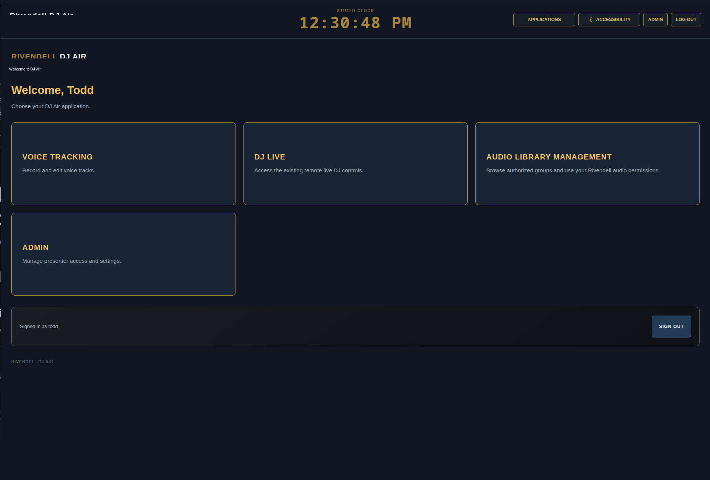
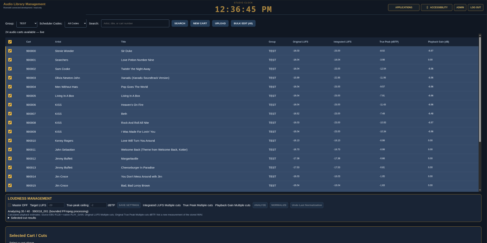

WELCOME SCREEN
The starting point for the DJ Air workspace.

Explore the current Rivendell DJ Air application interfaces. Additional reviewed screenshots are being prepared for publication.
The starting point for the DJ Air workspace.

Presenter controls, playout information and remote microphone interface.

Three-lane waveform editor, playlist, voice recording and segues.
Library management, audio analysis and normalization controls.

Audio Library's individual audio import workflow, separate from bulk uploading.

Presenter account creation and Rivendell rights management.

Presenter accessibility preferences, including text size, contrast, magnification and reduced motion.

Configuration, users and station management interfaces.

Service health, routing observations and engineering diagnostics.

Application and station backup configuration interfaces.

Mobile interface screenshots are on hold until the mobile experience is ready. Screenshots show development interfaces and may change before public release.